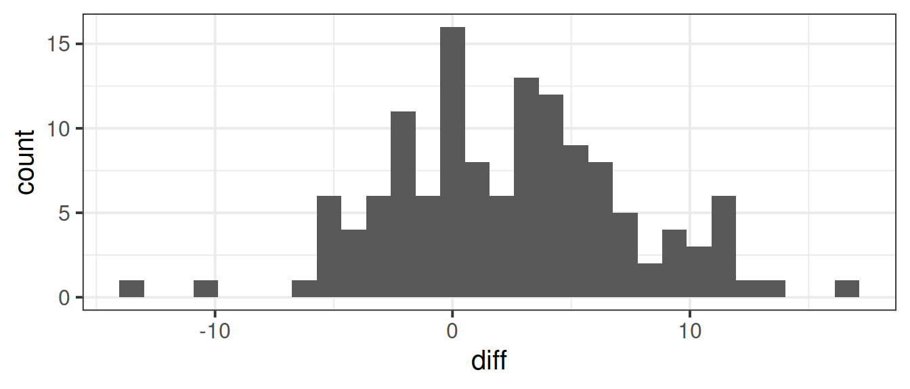
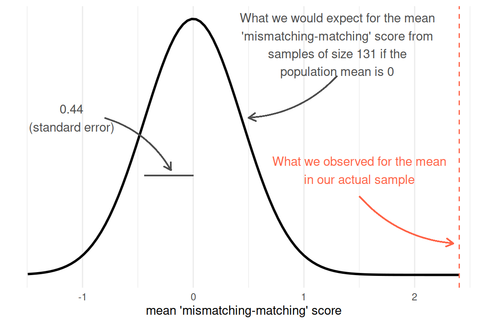
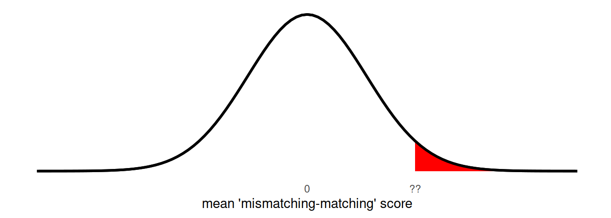
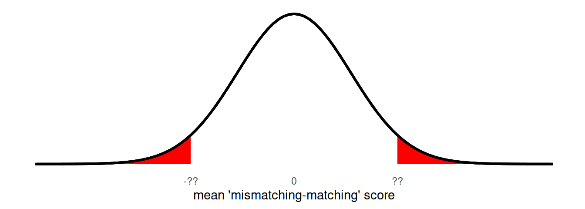

Foundations of Inference
We use statistics primarily to estimate parameters in a population. Whether we are polling people to make predictions about the proportion of people who will vote for a certain party in the next election, or conducting a medical trial and assessing the change in blood pressure for patients given drug X vs those given a placebo in order tp decide whether to put the drug into circulation in health service.
We have seen this already last week: We observed a sample of peoples’ life satisfaction ratings (scale 0-100), and we wanted to use these to make some statement about the wider population.
A sample estimates is not going to be spot-on. By taking only a subset of people, we introduced sampling variability - we have uncertainty in the accuracy of our estimate. We saw in the previous chapter how to make a confidence interval as a means of capturing this uncertainty, providing a range of plausible values.
Let’s look at this with a different example.
Stroop Data
The data we are going to use here come from an experiment using one of the best known tasks in psychology, the “Stroop task”.
In our dataset, we have information from 130 participants who completed an online task in which they saw two sets of coloured words. Participants spoke out loud the colour of each word, and timed how long it took to complete each set. In the one set of words, the words matched the colours they were presented in (e.g., word “blue” was coloured blue). In the other set of words, the words mismatched the colours (e.g., the word “blue” was coloured red (see Figure 1). The order of matching/mismatching sets was randomly allocated for each participant. Participants’ recorded their times for each set (matching and mismatching).1
The data are available at https://uoepsy.github.io/data/stroop.csv.
First, we read in the data and take a look at it. How many rows, how many columns, and so on.
library(tidyverse)
stroopdata <- read_csv("../../../data/stroop.csv")
dim(stroopdata)[1] 131 4names(stroopdata)[1] "id" "age" "matching" "mismatching"head(stroopdata)# A tibble: 6 × 4
id age matching mismatching
<dbl> <dbl> <dbl> <dbl>
1 1 41 22.3 16.9
2 2 24 22.3 19.1
3 3 40 15.4 13.6
4 4 46 9.9 15.0
5 5 36 14.2 16.4
6 6 29 19.9 18.0What we are interested in is the differences between the matching and mismatching times. For someone who took 10 seconds for the matching set, and 30 seconds for the mismatching set, we want to record their score as a difference of 20 seconds.
We can do that easily, storing the new values in a new variable:
stroopdata <-
stroopdata %>%
mutate(
diff = mismatching - matching
)And to quickly prove to ourselves that is has worked:
head(stroopdata)# A tibble: 6 × 5
id age matching mismatching diff
<dbl> <dbl> <dbl> <dbl> <dbl>
1 1 41 22.3 16.9 -5.4
2 2 24 22.3 19.1 -3.2
3 3 40 15.4 13.6 -1.81
4 4 46 9.9 15.0 5.14
5 5 36 14.2 16.4 2.18
6 6 29 19.9 18.0 -1.90And let’s get some summary statistics and a visualisation of that distribution too.
Code
# mean(stroopdata$diff) and sd(stroopdata$diff) work just as well
stroopdata %>%
summarise(
meandiff = mean(diff),
sddiff = sd(diff)
)# A tibble: 1 × 2
meandiff sddiff
<dbl> <dbl>
1 2.40 5.02Code
ggplot(stroopdata, aes(x = diff)) +
geom_histogram()
What we’re really interested in talking about is the average ‘mismatching - matching’ score for everybody, not just our sample of 131. But we only have those 131 people, so we’ll have to make do and use their data to provide us with an estimate.
Remember that there are many many different samples of \(n=131\) that we might have taken. And if we had taken a different sample, then our mean ‘mismatching - matching’ score (the mean(stroopdata$diff) value) would be different.
In the previous chapter we learned about how the distribution of all possible sample means we might take is known as a sampling distribution. We also learned that these tend to be normally distributed (regardless of the underlying population distribution) and so we can use the standard deviation of the sampling distribution (known as the standard error) to quantify the variation due to sampling.
To actually get at the standard error, one of our options is to simulate the act of ‘taking many samples of size \(n\)’ by taking lots of samples with replacement from our original sample.
As our analyses become more advanced, then this will become more complex. In this example, because we are just interested in estimating a single mean value, we can use replicate to do calculate the means from 1000 resamples from our original sample. We can then simply calculate the standard deviation of all these means:
stroop_bootstrapdist <-
replicate(1000, mean(sample(stroopdata$diff, size = 131, replace = TRUE)))
sd(stroop_bootstrapdist)[1] 0.4275064Alternatively (and more conventionally), we use a formula of \(\frac{\sigma}{\sqrt{n}}\), which we can calculate in R.
\(\sigma\) is the standard deviation of the population (which we are going to approximate by using \(s\), the standard deviation of our sample), and \(n\) is the size of our sample.
stroopdata %>%
summarise(
s = sd(diff),
n = n(),
SE = s/sqrt(n)
)# A tibble: 1 × 3
s n SE
<dbl> <int> <dbl>
1 5.02 131 0.438Finally, we can use our standard error to construct a range of plausible values for our estimated ‘mismatching - matching’ score. The range is centered around our point estimate (the mean score in our sample), and we widen it to include X% of the possible means we might also see from a sample of the same size. This is achieved by multiplying the standard error by a value to corresponds our confidence level.
For a 95% interval2:
se = sd(stroopdata$diff) / sqrt(nrow(stroopdata))
c(mean(stroopdata$diff) - (1.96 * se), mean(stroopdata$diff) + (1.96 * se))[1] 1.544046 3.261908Null Hypothesis Significance Testing (NHST)
Let’s suppose we are interested in whether there is an effect of the mismatching/matching colour-words. Our objective here has changed slightly: rather than being concerned with parameter estimation, our question is now about making a statement about two competing hypotheses:
- \(H_0 \,\, (\text{The Null Hypothesis}):\) There is no difference between matching and mismatching conditions.
- \(H_1 \,\, (\text{The Alternative Hypothesis}):\) There is no difference between matching and mismatching conditions.
If we use \(\mu\) to denote the average ‘mismatching - matching’ score in the population, then we can state these as:
- \(H_0: \mu = 0\).
- \(H_1: \mu \neq 0\).
With the confidence interval that we have created above, we can already make a statement about these. Our 95% CI does not contain zero, meaning that we can, with that same level of confidence, reject \(H_0\) in favour of \(H_1\).
However, there are instances where it is not feasible for us to create a confidence interval.3 This is where the other primary tool for null hypothesis significance testing comes in, the p-value.
p-values
The p-value is a formal way of testing a sample statistic against a null hypothesis.
To introduce the p-value, instead of thinking first about what we have observed in our sample, we need to think about what we would expect to observe if our null hypothesis is true.
With our Stroop Task example, our null hypothesis is that there is no difference between matching and mismatching conditions (\(H_0: \mu = 0\)).
Under \(H_0\), the average ‘mismatching-matching’ score in the population is zero, and we would expect most of the samples we might take to have a mean ‘mismatching-matching’ score of close to this (not exactly 0, but centered around 0).
We saw earlier that we could express the sampling distribution of means taken from samples of size \(n=131\) using the standard error. Under \(H_0\) we would expect the samples of \(n=131\) we might take to have means that follow something like the distribution in Figure 2.
Code
stroopdata %>%
summarise(
s = sd(diff),
n = n(),
SE = s/sqrt(n)
)# A tibble: 1 × 3
s n SE
<dbl> <int> <dbl>
1 5.02 131 0.438
We can think of this as the sampling distribution of \(\bar{x}\), but centered on our null hypothesis (in this case, \(\mu = 0\)). We call this the ‘null distribution’.
The p-value tells us how likely it is to see values at least as extreme as our observed sample statistic, if the null is true.
We have seen how we can calculate this already: the pnorm() function gives us the area of a distribution to the one side of a given value:
pnorm(??, mean = 0, sd = 0.44, lower.tail = FALSE)
For our Stroop Task example, we observed a sample mean of
Code
mean(stroopdata$diff)[1] 2.402977If the null hypothesis were true, and there was no ‘mismatching-matching’ difference, then the probability that we would see a sample (\(n=131\)) with a mean at least that large is:
# (we calculated that SE = 0.44 above)
pnorm(2.40, mean = 0, sd = 0.44, lower.tail = FALSE)[1] 2.454914e-08which is R’s way of printing 0.00000002454914.
There is one last thing, and that the direction of our hypotheses. Recall from earlier that we stated \(H_0: \mu = 0\) and \(H_1: \mu \neq 0\). This means that we are interested in the probability of getting results this far away from 0 in either direction.
We are interested in both tails:
2 * pnorm(2.40, mean = 0, sd = 0.44, lower.tail = FALSE)[1] 4.909828e-08
p-value
The p-value is the probability4 that we observe a test statistic at least as extreme as the one we observed, assuming the null hypothesis \(H_0\) to be true.
Now that we have our p-value of 0.00000004909828, we need to use it to make a decision about our hypotheses.
Typically, we pre-specify the probability level at which we will consider results to be so unlikely to have arisen from the null distribution that we will take them as evidence to reject the null hypothesis. This pre-specified level is commonly referred to as \(\alpha\) (“alpha”). Setting \(\alpha = 0.05\) means that we will reject \(H_0\) when we get a result which is extreme enough to only occur 0.05 (5%) of the time or less if the \(H_0\) is true.
In our case, 0.00000004909828 \(< 0.05\), so we reject the null hypothesis that there is no difference in the mismatching/matching conditions of the Stroop Task.
The language of NHST
There’s a lot of convention to how we talk about NHST, but the typical process is as follows:
- Clearly specify the null and alternative hypotheses.
- Specify \(\alpha\)
- Calculate statistic
- Compute p-value
- If \(p<\alpha\), then reject the null hypothesis.
- If \(p\geq\alpha\), then fail to reject* the null hypothesis.
*Note, we don’t “accept” the null, we just “fail to reject” it. Think of it like a criminal court - the null hypothesis is “innocent until proven guilty”
Footnotes
You can try out the experiment at https://faculty.washington.edu/chudler/java/ready.html↩︎
For other intervals, such as a 90% interval, we need to know the point at which 5% is either side of a normal distribution (i.e., giving us the middle 90%). We can do this with
qnorm()(we introduced this in Chapter 4).
qnorm(c(0.05,0.95))will give us 1.64, which we then put into our construction of the interval: \(90\%\, CI = \bar{x} \pm 1.64 \times SE\)↩︎Think about an example where our question is about whether there is a difference in variable \(Y\) between groups A, B, C and D. Around what should we construct our interval? Around the difference \(\bar{Y}_A - \bar{Y}_B\) (difference between A and B’s average scores on \(Y\)), or \(\bar{Y}_A - \bar{Y}_C\), or \(\bar{Y}_B - \bar{Y}_D\)?↩︎
What we have been seeing is that probabilities in NHST are defined as the relative frequency of an event over many trials (as “many” \(\to \infty\)). This requires assuming some features of the data generating process which guides what the “many trials” would look like (e.g., that there is no effect). The \(p\)-value is the probability of observing results as or more extreme than the data, if the data were really generated by a hypothesised chance process.↩︎